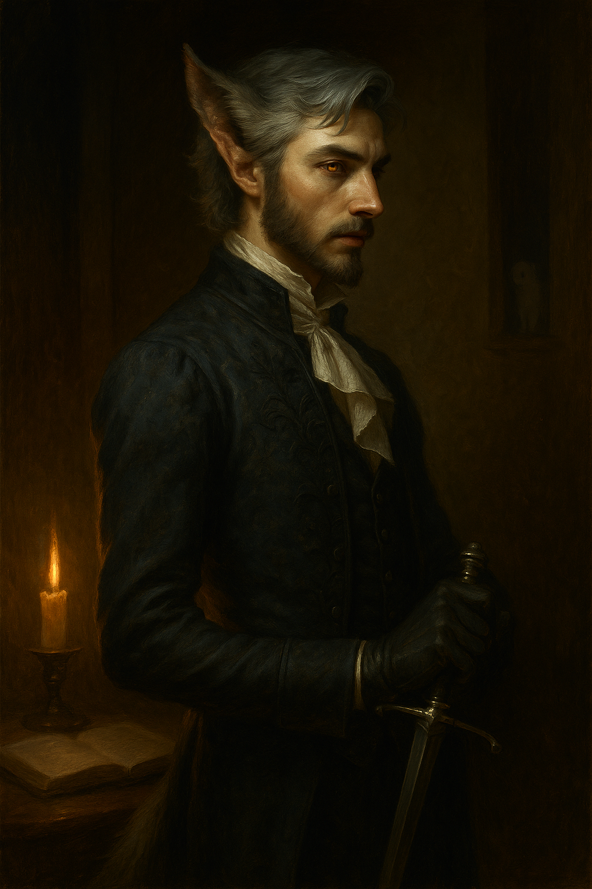
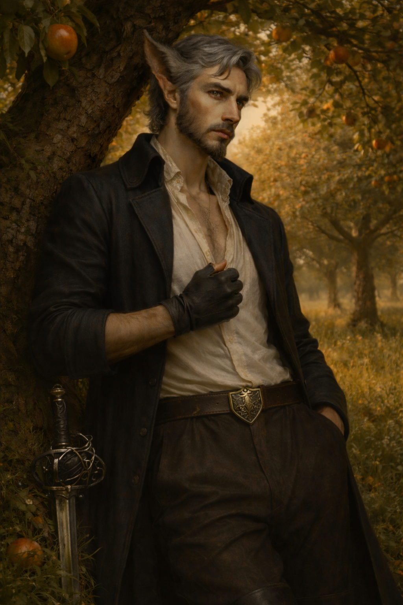

Basil Tenebrian¶

"My lady, I believe I can surmise where this conversation is going, and while genuinely flattered, I'm convinced your notion of the allure of the 'exotic noble' is inflated. I'm a scholar. My 'edge' is that of the papercut."
Shifter Bladesinger who thought scholarship would keep him safe. His mentor died proving otherwise. Now exiled on a stolen boat and hunted by an Order that specializes in families like his, the wallflower dandy must learn, finally, to take his own side.
Character Overview¶
- Species: Shifter (Beasthide)
- Class: Wizard 5 (Bladesinger)
- Background: Noble
- Age: 20
- Alignment: Neutral Good
Quick Intro
At the Table
- Fuzzes about little things, but if you're in need he will give you his last food scrap and never mention it.
- Exceptionally well-spoken and self-conscious. Still, his tail wags at compliments and his nose twitches at the scent of blood.
- Doesn't feel he belongs cleanly in any slot, whether noble, commoner, scholar or beast.
- A scholarly wallflower who just might go feral if cornered.
Backstory (Short Form)
Born with fur and fangs to noble House Tenebrian, Basil was tutored in secret by an elven sage who called herself Cilantro (yes, really), and taught him bladesinging alongside her stories from the world. When his father died and his elder brother inherited, the Order of the Silver Sun offered to resolve the family's discreet embarrassment. Brendall did not say no. Cilantro saw it coming and died covering Basil's escape; he stole a boat and sailed off, with monster hunters on his heels.
Playing Basil
- Combat: Hits AC 20 with Bladesong and Beasthide. Good mobility from Acrobatics and Stealth makes him a versatile gish. Warcaster plus Bladesong gives very strong Concentration saves.
- Roleplay: Bookish, overly polite, refined tastes, genuinely kind, sincere and considerate. He's at constant odds with his bestial self, fussing over cutting a tail hole in his new pants. He wears too much perfume and it makes his sensitive nose sniffle. Lexley the ermine familiar is his shadow self, a tiny regal murderhobo he has to constantly apologize for. But Basil is also a powerful wizard and changeling. When pressed, his animal nature surfaces.
- Party Synergy: Versatile expert scholar, comedic relief, damage dealer and genuinely supportive friend.
Deep Dive
Backstory¶
The noble house of Tenebrian received a proper shock when Basil was born, resembling a cub more than a human child with his pointed ears, rough fur and short tail. The estate exploded in accusations of everything from adultery to witchcraft. The mystery was never resolved, and his father Cecil eventually decided not to press the issue. Basil was recognized as a member of the house and given a fine education, but never allowed near the politics of the estate, nor its household, nor its people. He was taught the manners of a noble and given nowhere to use them.
Cilantro — a sly old elven sage who simply called herself that ("I'm not to the taste of everyone," she'd say with a smile) — was hired as his tutor, and saw what nobody else bothered to look at. Her lessons in history swerved quickly into the arcane, then from theory into practice. When Basil was twelve he called his first familiar, an ermine he named Lexley. She taught him bladesinging too, an art she said was shaped like his soul, though it took him years to understand what she meant. She called him "wolf in silk." He thought it was teasing. By the time he realized it was the kindest name he'd ever been given, she was no longer alive to tell. In the summers he sailed with his mother Nevarra to her family's archipelago, where the locals were not keen on the boy but also not especially bothered by him, and where he learned to navigate by starlight on quiet shores that asked him nothing.
When Lord Cecil died quelling a border uprising, his elder son Brendall inherited the title and the vast rebelling estate the King granted in gratitude for the sacrifice. Neither brother was ready. Basil had spent his life being told he was unfit for politics; Brendall had spent his being told he was. When representatives of the Order of the Silver Sun arrived some weeks after the funeral, offering to resolve the family's discreet embarrassment cleanly and without scandal, Brendall did not say yes so much as fail to say no. Cilantro saw it coming before Basil did. She broke him free the night before the Witch Hunters were to collect him, held the portcullis against them at the cost of her life, and left him to run alone to the harbor. He took the first boat he could untie and sailed. His mother Nevarra remains at the estate, diminished and silent. She has not written.
The Wolf and the Ermine¶
Basil has the refined tastes that come from prolonged reflection on small things. He would never stoop to eating raw meat, but the smell still makes his nose twitch. His bookish manners give way to something more feral when he feels cornered. Cilantro's "wolf in silk" was her way of telling him the compound was who he was, that he shouldn't try to reduce himself to one term. By the time he understood, she was gone.
Lexley is the opposite lesson. Where Basil is conflicted, Lexley is clear: a fierce and graceful predator with regal bearing and no particular interest in ethics. He kills the merchant's prize canary, the kittens behind the inn, whatever small creature crosses his path. Basil is embarrassed. Basil is apologetic. Basil replaces the canary and writes notes of contrition. And still, privately, he loves his familiar — the uncomplicated pleasure of watching something be exactly what it is, without hesitation. Then he feels guilty about that, too. Ermines are supposed to hunt; it's their nature. Lexley goes a little too far, and yet Basil cannot bring himself to stop him. On bad days he suspects this is important. On worse days he suspects he already knows why.
The Noble Who Isn't¶
Basil is very well spoken, but his family hid him away, which means he never quite learned how to be a person in a room. He has the manners of a noble and the bearing of someone who expects to be asked to leave. He knows which fork to use and will often hesitate anyway, in case hesitating is more polite. He over-tips innkeepers because he cannot tell whether his tip is insulting, and then worries that over-tipping is itself a form of condescension. He has been taught to address a Marquess and has no idea how to talk to a dockhand, because nobody ever taught him that a dockhand was a person one talked to. He is aristocratic in form and entirely without the confidence aristocracy usually installs in its sons. Cilantro tried to teach him that this was its own kind of freedom. He is still learning to believe her.
Sniffs, Sniffles, and Wardrobe Malfunctions¶
Smells guide Basil's experiences. Detect Magic is an olfactory event as much as a magical one — illusion spells smell of camphor and sage, conjurations of sulphur and ozone. He also uses perfume to mask a musk he is convinced he exudes, and probably does not, or at least not nearly as much as he fears. The perfume makes him sniffle and dulls his sense of smell, which is both practically inconvenient and — though he would not put it this way — a fair description of his entire social strategy.
The tail is a constant concern. Does he tuck it into his trousers, or have them tailored with a hole in the back? He has not settled on an answer, and the question recurs with every new wardrobe.
A Good Boy¶
In a tavern once, a barmaid called him a "good boy," absent-mindedly, the way one might speak to a spaniel who had stopped begging. He has since told the story as a comic anecdote to three different friends, because it was comic — his mortification, his tail betraying him, his hasty exit. What he has not told anyone is that for a single humiliating second, before the embarrassment caught up, he felt relieved. Not insulted. Relieved. As if a great burden had briefly lifted, and he had been allowed — for the length of a breath — to be a single simple thing that someone could name without thinking twice. He has avoided that tavern since. He is not entirely certain whether it's because of the shame, or because some part of him wants to go back.
The Stolen Boat¶
Basil stole the boat on the night of his escape. He does not know who it belonged to — a fisherman, probably, or a minor merchant; someone who woke up to a missing livelihood and has by now reported the theft to authorities who will not find it. This weighs on him in specific and uncomfortable ways. He is the kind of person who returns a borrowed book with the pages pressed flat, and he has stolen a man's entire vocation.
And yet. The sailing itself is the first thing he has ever done that feels uncomplicated. The wind does not care whether he is a shifter. The stars do not flinch. For hours at a time he is alone with the sea and the small work of navigation, and in that quiet he is neither scholar nor beast nor nobleman in exile — he is simply a competent sailor, a thing he was allowed to become because his mother's family lived by the water and nobody there thought his fur was unusual. The guilt and the bliss arrive together, braided; the guilt is the only thing keeping the bliss honest. Someday he intends to find the owner and make it right. He has not begun to.
Mechanical Considerations¶
With both Bladesong and Beasthide active, Basil reaches 20 AC with a little pool of temp HP on top. A strong bonus to Concentration saves on top of Warcaster advantage means CON 14 is perfectly serviceable.
Basil's background is a slightly adjusted Noble: the STR ability score increase was changed to DEX, and the proficiency in Persuasion was changed to Perception, to better reflect his wallflower upbringing.
Combat flow: Bladesinger and Beasthide compete for Bonus Action activations. Lead with Bladesong for bigger buffs when possible; Beasthide bolsters defenses when the combat flow allows it. It also fits the persona — he falls back on his more feral self as the battle continues and he grows more desperate.
Thematic note on Bladesong: The art Cilantro taught him holds the physical and the mental together in a single disciplined motion. It is, for Basil, the one place where his body and his mind are neither at war with each other nor covering for each other. Losing concentration has an emotional cost as well as a mechanical one — the moment the song breaks is the moment the world goes back to pulling him in different directions at once.
Wild Hunt alternative: If the +1 AC and temp HP from Beasthide feel superfluous, the Wild Hunt Shifter option gives advantage on Wisdom checks, providing stronger mechanical justification for his fine-tuned senses. It also makes him immune to attacks with Advantage.
Sample Quotes¶
"The barmaid called me a 'good boy', and I couldn't even project proper outrage because... I hate to admit it, but of course my stupid tail started wagging. 'Mortified' doesn't begin to cover my emotional state right now. So I'm afraid we need to find another tavern. I'm never coming back."
"My lady, I believe I can surmise where this conversation is going, and while genuinely flattered, I'm convinced your notion of the allure of the 'exotic noble' is inflated. I'm a scholar. My 'edge' is that of the papercut."
"Sir, I must insist — whatever offense I have given, I retract it and apologize twice; once for the original slight and again for the stubbornness of making you articulate it. As for the duel, I really must decline. My sword training is more akin to... a dance, you understand. An interpretive thing. Not at all the same as — Lexley, will you please stop staring at his pocket watch. Sir — apologies — where were we? Oh yes. As I was saying. I absolutely refuse. I shall see you at dawn."
"The innkeeper kept calling me 'young lord.' I kept correcting him, quietly. I'm not sure whether I was correcting him because it's untrue, or because I cannot bear the sound of it on someone else's mouth."
"It wags at the wrong people. I've tried — I swear, I've tried — to reason with it. It does not reason. It is not a limb of argument. It is an organ of opinion, and its opinions are its own."
"Lexley! That's a priceless canary. I'm aware it looks like dessert, but they are not for consumption!"
"Never understood why Cilantro insisted on teaching me Three-Dragon Ante. Such a silly game. But now there's a memory of her ingrained in every card."
"There was a widow in the market, visibly short on coin, so I paid for her groceries. She called me a freak — her word — and said she had not asked any favors of my kind. She thanked me anyway, briefly, before moving on. What surprised me is that the word did not land. I had expected it to and it simply didn't. What has stayed with me instead is the count: twelve other people stood in that market, and I was the only one who moved. I think I may have been telling myself the wrong story about what makes me unusual."
"What do I care if my bladesong sounds like 'common howls and yiffs' to you? It is an interpretive artform! You wouldn't understand."
"Sea-breeze smells to me of something even more beautiful than freedom: to be by myself, for myself."
Personality Framework¶
Personality Traits: Propriety, fragrance notes and hem lengths may seem like fuzzy little things to you, but that's how you know if a person truly cares about you. If they also care for the small details in your life. The bigger picture: if you're in need I will give you my last food scrap, and never bring it up again. I don't linger in the shame or vulnerability of others.
Ideals: Knowledge without kindness is just a sail without wind. Yes, I read that in a book. Still true.
Bonds: Mother stayed behind. She has not written. I do not know whether it is because she cannot, or because she has decided not to, and I am not certain which would be worse.
Flaws: I doubt there is truly a place for me in this world. I fear the truth of who I am. Yes, Lexley bites the heads off kittens, but I can't bring myself to put him on a leash. That's just his nature! My nature? I'm a scholar, of course!

Key Relationships
Perdita Saltfrost: A perfumer in her middle years, running a cramped shop called Violet and Honey. She's immune to Basil's self-consciousness because she's spent forty years cataloguing animal musks, floral absolutes, and the occasional Planar essence — the sweat of a nervous aristocrat barely registers. She plays Three-Dragon Ante with the viciousness of a loan shark and the smile of a grandmother, and she cheats with such artistry that catching her is considered a compliment. She knows Basil is hiding something. She knows better than to ask.
She is also the reason Basil came to this port city. Cilantro had, years ago, named her as a safe harbor. When Basil staggered off the stolen boat half-starved, her name was the only destination he had. Perdita greeted him like an old acquaintance's grown son, fed him, asked no questions, and quietly arranged a room. She has not volunteered how long she and Cilantro knew each other, or what they were to each other. She has also not mentioned the oilcloth-wrapped package on the high shelf behind the orris-root tincture, which she was instructed to keep for a specific moment. She will recognize the moment when it arrives. So, she hopes, will Basil.
She also makes, for a modest fee and without comment, a line of heavy perfumes calibrated to confound tracking hounds. Basil has not yet worked out that this is what he's been buying.
Captain Torval Kettridge: The grizzled sailor who taught Basil to navigate during those summer voyages with his mother. Retired now, running a chandlery in whatever port city the campaign starts in. He doesn't know the full story of Basil's flight, but he knows the boy showed up half-starved with a stolen boat and haunted eyes. Torval is old-fashioned, superstitious, the kind of sailor who nails iron horseshoes to the mast. He likes the boy. He is also, by his own admission, the kind of man who would have drowned a shifter pup "for its own good" in his younger days, and he has not entirely clarified — to himself or to anyone else — whether he has since come to disagree with that younger man or merely come to dislike him.
He gave Basil refuge the first weeks after the escape, assuming the young man was fleeing something understandable — a debt, a lover's scandal. Basil never outright lied, but also opted not to let the old man understand he was harbouring a political refugee. He still owes Torval for that refuge, and the debt compounds every time he thinks about it.
Practically, Torval is a door into the sea. Every port on this coast has a retired chandler, and every retired chandler knows three others; Torval has the old sailor's gift for quietly asking questions on someone else's behalf, and the network to route an answer back. If Basil ever decides to trace the owner of the stolen boat — a thing he thinks about more often than he admits — Torval is the person who would know how to begin. Which means that investigation will also be the moment Torval finally asks the questions he has so far politely declined to ask.
Yovanna Stern: A Witch Hunter from the Order of the Silver Sun who struggles with doubt and faith. Born into a family whose piety was exceeded only by their ambition, her path to the Order was never in question — only how well she would ultimately excel. She's not a villain and definitely not a friend. She's just tracked Basil long enough to notice the pattern doesn't fit. The beast isn't killing. The monster writes poetry and fusses over tailoring. She has started asking inconvenient questions of her superiors, and from what Basil could surmise from their last encounter, she received unsatisfying answers.
He was running from her colleagues, cursing his carelessness and weaving across the night streets. Pursuers hot on his heels, he almost ran into her, stopping dead in his tracks. She merely lowered her crossbow and signed for him to pass. "This once, and only until I have answers," she muttered as he passed. She's not ready to help Basil, but she's no longer certain they should kill him.
Notes for the DM
Dramatic Questions¶
- Can Basil ever go home, and would he want to if he could?
- When someone treats him with simple kindness, does he believe them, or does he deflect it into self-deprecation before it can land?
- What would it take for him to stop apologizing for existing?
- If the Order offered him not death but recognition — the thing he has wanted since he was a child — could he refuse?
Plot Hooks¶
The Order of the Silver Sun are not the fanatics they appear to be, and this is the key to running them well. On the public face, they are what any inquisition looks like: armored Witch Hunters patrolling roads, templars handling reports of lycanthropy, priests preaching vigilance from the pulpits of small towns. Yovanna is one of these. So are the three who came for Basil in his quarters. They are ordinary humans doing an ordinary job, with the usual distribution of true believers, careerists, and decent people trying to act rightly inside a flawed system. When Yovanna's superiors gave her unsatisfying answers to her uncomfortable questions, those answers were unsatisfying because the real answers are classified several ranks above her station.
Above this public face is a second tier the rank-and-file do not know exists. These are individual operators, dispatched when the hammer is insufficient — against the ancient shifter who has learned to pass for decades, the vampire lord with a city in his pocket, the dragon-blooded heir of a kingdom. They have been altered in ways that permit them to kill the things Yovanna cannot. They are, by any technical definition, monsters themselves. They know this. It is the joke they tell each other at dinner.
What separates them from cartoon inquisitors is that they have already done the moral arithmetic, and they live with its answer. They know they execute innocent shifters at a calculable rate. They have an internal term for it, clinical and slightly shameful. They have concluded, not hastily but after long reflection, that a world containing their Order — killing the wrong person one time in seven — is materially better than a world without it, in which the genuine horrors have room to organize and the idea of the uncanny-as-neighbor becomes thinkable enough to shelter real predators. A society must be able to sleep at night. Someone pays for that sleep. They have agreed to be that someone. They may even be right, and that is the knife.
These upper-tier operators are melancholics, not fanatics. They recruit from a specific psychological profile: people who have already lived in liminal spaces, who already carry the weight of unearned survival, who are already misread by everyone who loves them. Basil fits the profile exactly.
Running the Order at the table: Rank-and-file encounters should play like textbook Witch Hunter scenes — nets, pikes, the grinding pressure of being hunted as a beast. Lean into the dehumanization. These people genuinely believe Basil is an "it," and their weapons and language are calibrated accordingly. This is where the bulk of the Order's appearances should live.
The upper tier only enters play late, and preferably only once. The scene to aim for is not a combat. It's a conversation. Someone finds Basil somewhere he believed he was safe — a quiet inn, a ship's stern at night — and is already sitting down by the time he notices. They do not raise a weapon. They offer him three choices, in roughly these terms: die cleanly and without pain, accepting that you were never going to win this; disappear completely, change your name, never cast a spell in public again, and we will leave you alone; or join us, because you are exactly the kind of person we recruit, and you have been preparing for this interview your entire life without knowing it. The horror of the scene is not the threat. It is that the offer is made respectfully, without contempt — and that the operator might be telling the truth.
Brendall's compromise. In the weeks after Brendall failed to say no to the Order, their representatives did not leave the estate. They embedded. Brendall is now a quiet source of income and institutional foothold, granting the Order discreet access to his cities, his courts, his patronage networks. He believes he is managing them. He is not. If and when Basil learns this, it should land not as a betrayal — he was already betrayed — but as a diagnosis. His brother was not a villain. He was a weak man in a room with professionals who eat weak men for a living, and Basil is in that same room now. This also removes the need for a separate manipulator figure: Brendall's passivity is itself load-bearing, and dressing it up with an advisor would let him off the hook in ways that weaken the theme.
Yovanna's arc is deliberately open. The ingredients here can be arranged several ways, and the table should answer rather than the sheet. She may die in her first real combat with the party, because that is how dice work. She may turn on the Order, having figured out more than her superiors wanted her to. She may be quietly marked for upper-tier evaluation and reappear later, wearing different armor, asking Basil whether he has made his choice yet. She may become a reluctant, complicated ally who never quite crosses the line. Note only that if you play her as a textbook eventual-ally, you will need her to make the wrong choice at least once or twice before she lands. Otherwise she reads as predetermined, and the moral weight of her being a Witch Hunter evaporates.
Cilantro's package. The oilcloth-wrapped object on Perdita's high shelf contains two things: Cilantro's personal spellbook, annotated in her own hand, and a sealed letter. The spellbook is a mechanical gift — a few bladesinger-appropriate spells she developed or favoured, distributed as the party's progression permits. The letter is where the weight lives.
The letter should reveal that Cilantro was, in an earlier life, an upper-tier operative of the Order of the Silver Sun. She was recruited because she fit the profile. She served long enough to get good at it, and long enough to be unable to continue. She walked away, quietly, in a manner the Order has never quite forgiven but has so far tolerated. She sought Basil out because she had seen the files from inside — a shifter child born to a noble house would eventually be on someone's list — and she taught him bladesinging specifically because she had killed bladesingers and knew what they could survive. She loved him genuinely. She also chose him professionally. Both things are true, and the letter should not try to reconcile them.
When to deliver this is a judgment call. Too early and it hijacks Basil's grief before he has processed it; too late and it ceases to matter. A good moment is after the party has had their first substantial encounter with the Order's upper tier — or after Basil has been offered something by them that he has not fully refused — so the letter lands as context for a choice he is already making. It reframes his mentor, contextualizes the Order's interest in him, and gives him a model of someone who did this work and walked away, which is the one piece of evidence he needs that refusing their offer is even possible.
Two things to hold in mind when running this. First, do not play it as a betrayal. Cilantro's love for Basil was real, and the letter should read as confession rather than excuse. Her professional interest and her personal affection coexisted; that is the whole point. Second, the letter opens a door to Order lore the upper-tier operators can then exploit in conversation: "You know, of course, that your tutor was one of ours. She said the same things you are saying now. You know how her story ended." Handle with care. Basil's inheritance from Cilantro is not safety; it is a more honest understanding of what he is being asked to refuse, and why the refusal is going to cost him something.
Mechanical build (lv 5) and PDF download
| STR | DEX | CON | INT | WIS | CHA |
|---|---|---|---|---|---|
| 8 (-1) | 16 (+3) | 14 (+2) | 18 (+4) | 10 (+0) | 8 (-1) |
Combat Stats¶
| AC | HP | Hit Dice | Speed | Initiative | Prof. Bonus |
|---|---|---|---|---|---|
| 15 | 32 | 5d6 | 30 ft. | +3 | +3 |
Saving Throws: INT +7, WIS +3 Resistances: None
Proficiencies¶
Skills: Acrobatics +6, Arcana +10 (Expertise), History +7, Investigation +7, Performance +2, Persuasion +2, Religion +7, Stealth +6
Armor: Light Armor | Weapons: Rapier, Simple Weapons
Tools: Three-Dragon Ante Set, Vehicles (Water) | Languages: Common, Elvish
Key Features¶
- Bladesong (PB/Long Rest, Bonus Action): For 1 minute gain +4 AC, +10 ft. speed, advantage on Acrobatics checks, and +4 to CON saves for concentration. Ends if incapacitated, wearing medium/heavy armor or shield, or using two-handed weapons.
- Shift - Beasthide (PB/Long Rest, Bonus Action): Gain 1d6+6 temporary hit points and +1 AC for 1 minute.
Feats¶
- War Caster: Advantage on CON saves to maintain concentration; can cast spells as opportunity attacks; can perform somatic components with weapons/shield in hand
- Skilled: Gain proficiency in three additional skills or tools
Equipment¶
Studded Leather, Rapier, Orb (arcane focus), Enduring Spellbook, Fine Clothes, Perfume, Three-Dragon Ante Set
Suggested Magic Items
- Amulet of Proof against Detection and Location (Uncommon, requires attunement, you can't be targeted by Divination spells or seen through scrying; cheap insurance vs Witch Hunters)
- Cloak of the Manta Ray (Uncommon, requires attunement, you can breathe underwater, and get a swim speed of 60 ft. Especially for sailing campaigns where Basil's proficiency in Vehicles (Water) might be useful.)
Spellcasting¶
- Cantrips: Fire Bolt, Booming Blade, Mage Hand, Minor Illusion
- Level 1: Shield, Find Familiar [R], Absorb Elements, Ray of Sickness, Disguise Self, Comprehend Languages [R], Unseen Servant [R]
- Level 2: Misty Step, Scorching Ray, Phantasmal Force, Blur, Detect Thoughts
- Level 3: Haste, Hypnotic Pattern, Fireball, Counterspell
Session Zero Considerations
Content Notes: Themes of family betrayal, exile, character death (mentor sacrifice), and being hunted by a theologically sophisticated institution that knows it kills innocents and does so anyway. Explores internalized fear of being monstrous, and the deeper fear of being legibly reduced to a single thing.
Representation Notes: Character features shifter heritage (lycanthrope-adjacent transformation). Elements of body dysmorphia, identity struggle, and not fitting societal norms that may resonate with queer and disability experiences. The character's tail wagging involuntarily could be read as coded neurodivergent traits.